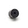

Things used in this project
Hardware components |
|
| Raspberry Pi 4 Model B | |
| Inertial Measurement Unit (IMU) (6 deg of freedom) | |
|  | Buzzer |
| Breadboard (generic) | |

|
LED (generic) |

|
Jumper wires (generic) |
| Resistor 330 ohm | |
| Flash Memory Card, MicroSD Card | |
Software apps and online services |
|
| Raspberry Pi Raspbian | |
| Twilio API for WhatsApp | |
| GPSd Forwarder | |
| shapr3d | |
Hand tools and fabrication machines |
|

|
Soldering iron (generic) |

|
Solder Wire, Lead Free |
Story
Overview
RescueTap is an emergency alert system that notifies caregivers when someone with mobility problems falls or is in danger. The idea for RescueTap came from the need to give people at risk of falling or danger a fast and trustworthy way to alert their caregivers or family members even when they can't reach their phone.
RescueTap is a wearable device that uses sensors and mobile‘s GPS tech to spot falls and send emergency alerts to chosen caregivers. The system also lets users cancel false alarms with a simple button push. It aims to give peace of mind and speedy help in critical moments.
Build2gether 2.0 challenge
The concept for RescueTap came from the Build2gether 2.0 Inclusive Innovation Challenge . This contest asked Innovators to create solutions to make life easier for those with disabilities. I realized how crucial quick help is during emergencies. So, I aimed to build a device that could spot falls on its own and alert caregivers. I wanted it to work without complex setup or user input.
I talked with people who face physical challenges. From these chats, I saw a real need for a device that can do two things. First, it should detect falls . Second, it should let users call for help if needed. I also learned how vital it is to give caregivers exact location details. This helps them respond.
Problem Identification
The idea for RescueTap came from wanting to help people with disability who might fall or are in danger . Falling is a big problem for folks with limited movement, and it can be bad if no one's around to help.
Many current solutions use devices you wear, but you have to push a button when there's trouble. Sometimes though, a person who falls can't press that button. This got me thinking about making a system that spots falls on its own and calls for help without the person doing anything.
Taking part in the Build2gether 2.0 Challenge helped me to improve my ideas and get useful input from Contest Masters who would benefit most from this tech. I created RescueTap with their exact needs in mind making sure it's easy to use, dependable, and can give real-time location info.
Developing a Solution
RescueTap was built to tackle these problems by putting an accelerometer and gyroscope sensor into a small wearable device connecting to mobile's GPS. Key features of the RescueTap include:
1- Automatic Fall Detection: The device employs an accelerometer and a gyroscope contained in the MPU-6050 sensor that has the capability of identifying the fall episodes. As it happens in the case, if a fall occurs, it raises an emergency alarm automatically irrespective of the user.
2- Manual Emergency Alert: An emergency button is another feature incorporated in the design whereby the user is able to send an alert manually by pressing the button. This feature can be very helpful when the user expect to trip or experience other mishap, but has not tripped yet.
3- GPS Location Tracking: Standardized GPS helps to guarantee that each of the delivered alerts contains the user’s coordinates. This enables the responders to be able to track the position of the distressed person easily.
4- Alert Cancellation Feature: If the alert is active, the user can manage to dismiss the alert by holding the button for at least 5 seconds. It will emit a specific alarm to ensure that the cancellation does not invite false alarms.
5- Buzzer Feedback: There are four objects found in the device such as an Alert icon, which is for sending an alert or canceling it, and a Buzzer that sounds when an alert is sent or canceled. Available tones differ depending on the status of the alert, which helps to achieve nice usability of the system.
6- Compact and Portable Design: Still, the components are located in a plastic housing which makes the device portable and unobtrusive if worn on the body. It is meant for daily application although it does not create discomfort to the user.
7- Easy Setup and Customization: One of the most significant advantages of the RescueTap is that its construction is very simple, and a number of detailed constructions are given. It can also be accordingly modified to reduce or increase the sensitivity level of the fall detector or to change the mode of alerting.
8- Real-time Communication: Notifications are sent at the time as the situation occurs; so that the emergency contacts get all the necessary information on time.
How it works
RescueTap works by continuously monitoring the user's movements through its integrated accelerometer and gyroscope sensors. When a fall is detected, the device automatically sends an alert to the caregivers with the user’s GPS location. The detection of the fall is automatic, thus ensuring that help is timely sent even by the user who is unable to press the alert button due to his/her condition.
Independently from that, the device can detect falls and also allows the user to call for help. In this case the user can use a button to generate an emergency alert.

However, if he/she hit it by mistake, he/she can stop the alert by holding the button down for over five seconds. This feature plays the critical aspect of ensuring that real emergencies are only reported while not false alarms are created.

In order to facilitate the identification of an alert that has been sent or canceled in the device, the RescueTap has a buzzer and an LED. These make different sound and light in relations to what could be happening. This enables the caregivers to have it right and current that they are getting correct info about status of the user, or where the user is.
As for every alert there is GPS data in exact coordinates by using gpsd forward app. This app using mobile’s gps by connecting mobile’s IP to raspberry’s IP.
This goes directly to the caregivers’ phones thus alerting them to make a move and assist. This alert is sent using Twilio API for realtime whatsapp messaging.
Build Instructions
Below are instructions on how to prototype, assemble, and deploy the RescueTap. These instructions assume you are familiar with the Raspberry Pi 4 Model B and working with Python.
Complete project code and 3D files are found within this project's attachments and on Github.
RescueTap Hardware
Building the RescueTap device, need the following components:
Raspberry Pi 4 module B
Accelerometer and gyroscope module (MPU-6050)
Tactile button
Buzzer
LED
Resistor
Jumper wires
Enclosure for the device
Prototype circuit
The prototype circuit consists of the following connections:
- The accelerometer and gyroscope module are connected to the I2C pins.
- The push-button is connected to a GPIO pin configured as an input with a pull-up resistor.
- The buzzer is connected to a GPIO pin configured as an output.
- The LED is connected to a GPIO pin configured as an output.
RescueTap.py
I started by importing all the tools I knew I’d need for this project. I grabbed `smbus2` to talk to the sensor over I2C, `math` for any calculations I’d have to do, and `time` to handle delays. Since I’m working with a Raspberry Pi, I brought in `RPi.GPIO` so I could control the physical pins. To send alerts, I needed Twilio, so I imported `Client` from their library. Finally, I pulled in `gpsd` to get the GPS data from the Pi.
import smbus2
import math
import time
import RPi.GPIO as GPIO
from twilio.rest import Client
import gpsdNext, I connected to the GPS service running on the Raspberry Pi using `gpsd.connect()`. This step was crucial because I wanted to know the device's location if it ever detected a fall. Once connected, I grabbed the current GPS data using `gpsd.get_current()`, so I’d be ready to send that information in case of an emergency.
# Connect to the local gpsd instance
gpsd.connect()
# Get the current GPS data
packet = gpsd.get_current()After that, I set up Twilio. I used my account SID and auth token to create a `Client` object, which allows me to send messages via WhatsApp. I also defined the `whatsapp_from` and `whatsapp_to` variables, which would hold the sender’s and receiver’s numbers for the alerts.
# Twilio account details
account_sid = ""
auth_token = ""
client = Client(account_sid, auth_token)
whatsapp_from = "" # Twilio's Sandbox number
whatsapp_to = "whatsapp:"With the communication part ready, I moved on to the MPU-6050 sensor. I started by initializing the I2C bus, which is how the Raspberry Pi talks to the sensor. Then, I woke up the sensor by writing a zero to the `PWR_MGMT_1` register. I also configured the sensor to measure acceleration and rotation at the correct ranges and speeds, ensuring I’d get accurate data.
# MPU-6050 register addresses
PWR_MGMT_1 = 0x6B
SMPLRT_DIV = 0x19
CONFIG = 0x1A
GYRO_CONFIG = 0x1B
INT_ENABLE = 0x38
ACCEL_XOUT_H = 0x3B
ACCEL_YOUT_H = 0x3D
ACCEL_ZOUT_H = 0x3F
GYRO_XOUT_H = 0x43
GYRO_YOUT_H = 0x45
GYRO_ZOUT_H = 0x47
# Initialize the I2C bus and MPU-6050 sensor
bus = smbus2.SMBus(1)
address = 0x68
# Wake up the MPU-6050 sensor
bus.write_byte_data(address, PWR_MGMT_1, 0)
# Set the sample rate divider to 50Hz
bus.write_byte_data(address, SMPLRT_DIV, 9)
# Set the gyro and accelerometer ranges
bus.write_byte_data(address, GYRO_CONFIG, 0)
bus.write_byte_data(address, CONFIG, 0)
# Enable the accelerometer interrupts
bus.write_byte_data(address, INT_ENABLE, 0x01)Next, I tackled the hardware setup on the Pi. I connected a button to one of the GPIO pins, setting it up as an input with a pull-up resistor to detect when it’s pressed. I also wired up a buzzer and an LED to other GPIO pins, setting them as outputs. The buzzer would sound and the LED would flash when a fall is detected or canceled.
# Physical button setup (GPIO pin number may vary)
BUTTON_PIN = 16
BUZZER_PIN = 25 # GPIO18 for the buzzer
LED_PIN =17
GPIO.setmode(GPIO.BCM)
GPIO.setup(BUTTON_PIN, GPIO.IN, pull_up_down=GPIO.PUD_UP)
GPIO.setup(BUZZER_PIN, GPIO.OUT) # Set up the buzzer pin as an output
GPIO.setup(LED_PIN, GPIO.OUT) # Set up the led pin as an outputWith the hardware and sensor ready, I moved on to defining the thresholds for detecting a fall. I decided that if the acceleration exceeded 0.5 m/s² or if the rotational velocity was greater than 2 degrees/second, I’d consider it a fall. I also set up a few variables to handle the button presses, including timing how long the button is held down.
# Variables to handle button press
#last_button_press_time = time.time()
last_button_press_time = 0
button_press_start_time = 0
button_press_count = 0
long_press_duration = 5 # 5 seconds for a long press
def sound_buzzer(duration):
"""Turn the buzzer on for a specified duration."""
GPIO.output(BUZZER_PIN, GPIO.HIGH)
time.sleep(duration)
GPIO.output(BUZZER_PIN, GPIO.LOW)Finally, I dove into the main loop, which is the heart of the program. Here’s what I did:
# Main loop
while True:First, I kept checking the GPS data in each loop iteration so I’d have the most up-to-date location if a fall was detected.
packet = gpsd.get_current()
#Extract the latitude and longitude values
latitude = packet.lat
longitude = packet.lonThen, I read the raw data from the accelerometer and gyroscope on the MPU-6050. I converted these raw values into meaningful units: m/s² for acceleration and degrees/second for rotation.
# Convert the latitude and longitude to decimal degrees
latitude = int(latitude) + (latitude - int(latitude)) * 100 / 60
longitude = int(longitude) + (longitude - int(longitude)) * 100 / 60
print("Latitude: {:.6f}, Longitude: {:.6f}".format(latitude, longitude))
# Read the acceleration values in X, Y, and Z axes
raw_accel_x = bus.read_byte_data(address, ACCEL_XOUT_H)
raw_accel_y = bus.read_byte_data(address, ACCEL_YOUT_H)
raw_accel_z = bus.read_byte_data(address, ACCEL_ZOUT_H)
# Read the gyroscope values in X, Y, and Z axes
raw_gyro_x = bus.read_byte_data(address, GYRO_XOUT_H)
raw_gyro_y = bus.read_byte_data(address, GYRO_YOUT_H)
raw_gyro_z = bus.read_byte_data(address, GYRO_ZOUT_H)
# Convert the raw values to m/s^2
accel_x = (raw_accel_x / 16384.0) * 9.81
accel_y = (raw_accel_y / 16384.0) * 9.81
accel_z = (raw_accel_z / 16384.0) * 9.81
# Convert the raw values to degrees/second
gyro_x = (raw_gyro_x / 131.0)
gyro_y = (raw_gyro_y / 131.0)
gyro_z = (raw_gyro_z / 131.0)I calculated the total acceleration and rotational velocity to see if they exceeded my predefined thresholds. If they did, I figured a fall had likely happened. I flashed the LED as a visual alert, sent the fall location via WhatsApp using Twilio, and sounded the buzzer for a second.
# Calculate the total acceleration
acceleration = math.sqrt(accel_x**2 + accel_y**2 + accel_z**2)
# Calculate the total rotational velocity
rotational_velocity = math.sqrt(gyro_x**2 + gyro_y**2 + gyro_z**2)I also added logic to handle the button press. If the button was held down for more than 5 seconds, I interpreted that as a cancel action. In this case, I sent a cancellation message, flashed the LED for confirmation, and sounded the buzzer differently to let the user know the alert was canceled.
# Check if the physical button is pressed
button_state = GPIO.input(BUTTON_PIN)
current_time = time.time()
if button_state == GPIO.LOW:
if button_press_start_time is None:
# Button was just pressed
button_press_start_time = current_time
elif current_time - button_press_start_time >= long_press_duration:
# Button has been pressed long enough
message = "Fall alert cancelled."
client.messages.create(body=message, from_=whatsapp_from, to=whatsapp_to)
GPIO.output(LED_PIN, GPIO.HIGH) # Turn LED on
time.sleep(10) # Wait for 10 second
GPIO.output(LED_PIN, GPIO.LOW) # Turn LED off
time.sleep(1) # Wait for 1 second
sound_buzzer(3) # Sound the buzzer for 3 second when a fall alert is canceled
button_press_start_time = None # Reset button press start time after cancellation
time.sleep(1) # Debounce delay
else:
if button_press_start_time is not None:
# Button was pressed but is now released
press_duration = current_time - button_press_start_time
if press_duration < long_press_duration:
message = "Possible fall detected by push button at: https://www.google.com/maps?q="
message += str(latitude) + "," + str(longitude)
client.messages.create(body=message, from_=whatsapp_from, to=whatsapp_to)
for _ in range(25): # Loop 5 times
GPIO.output(LED_PIN, GPIO.HIGH) # Turn LED on
time.sleep(1) # Wait for 1 second
GPIO.output(LED_PIN, GPIO.LOW) # Turn LED off
time.sleep(1) # Wait for 1 second
sound_buzzer(1) # Sound the buzzer for 1 second when a fall is detected
time.sleep(10) # Wait before taking another reading
button_press_start_time = None # Reset button press start timeAfter each loop iteration, I paused for a second before checking again, to ensure the program wasn’t too demanding on the Raspberry Pi.
# Wait for 1 second before taking another reading
time.sleep(1)
Prototype testing
RescueTap Assembly
After the prototype has been tested, its components can be assembled using these steps into the final RescueTap design:
- Connect the accelerometer and gyroscope module to the microcontroller using I2C communication.
- Connect the Mobile's GPS to the Raspberry PI with server address and port.
- Attach the push-button and buzzer to the GPIO pins.
- Write the code to handle sensor data, detect falls, and manage button presses.
- Implement the alert and cancellation messages, ensuring they include the GPS location.
- Test the device to ensure it detects falls accurately and sends the correct alerts.
How to Use RescueTap
To use RescueTap, just wear the device. If you happen to fall, it will automatically notify your connected caregivers. If you accidentally trigger an alert, you can cancel it by pressing and holding the button for five seconds. A buzzer and LED will let you know if the alert has been sent or canceled.
What's Next for RescueTap
RescueTap is already a powerful tool for ensuring the safety of individuals at risk of falls, but there are several ways it could be improved in the future:
- Linking with more mobile apps and smart home setups: More users would be able to tailor their emergency call-oriented actions if RescueTap was integrated with a range of mobile applications or smart home systems. For instance, upon detection of a fall, the system could be set up in a way that it opened the main door to the house to allow in emergency medical services; turned on warning lights to avoid any further injury; or used a smart home intercom to call and alert people at home. Furthermore, it could also connect with instead monitor health-related applications to detect certain types of activity and changes in trends that rescue pet preventers may use to anticipate an impending tumble.
- Better fall-spotting systems to cut down on false alarms: Nonetheless, there is also room for improvement, even in RescueTap’s current fall detection system, which is not bad in terms of effectiveness. Future versions of the device might extend to machine learning, which helps distinguish ordinary activities from falls, like a user quickly taking a seat or a gadget being dropped by the user. This would reduce the pending alerts that family members are always subjected to, which are mostly false alarms, and ensure that alerts are raised only when a caregiver response is pertinent. Also, there is a possibility that with clients’ continued learning, there might be a change within the motion detection for use by the client, ensuring a higher level of accuracy.
- A tinier more comfortable shape to make it easier to wear: Making RescueTap smaller and more ergonomic would increase user comfort and make the device more civilian in appearance. This could include shrinking the size of the internal parts or implementing soft materials that will follow the contour of the user’s body. A less bulky and weighty gadget may prove to be less conspicuous and be worn differently e. g. in the form of a wristband, a pendant or even embedded within the fabric itself. Enhanced user wears the device more willingly, especially those who would otherwise not wear the bulky device regularly.
- More ways to give feedback, like shaking to alert you: Users would feel more secure by incorporating a vibration feedback mechanism into RescueTap. For instance, if the user is wearing the device and falls down, the device could vibrate to the user’s arm as a double instruction which is informing him that help would soon be summoned. If by mistake the user turns on the false alarm then a different impulse would inform the user to press and hold the button in order to cancel the alarm. This is especially important for people with hearing impairments or in a noisy situation where a buzzer could not be heard. This definitely will improve the engagement of the device as most really would love to interact more with the device.